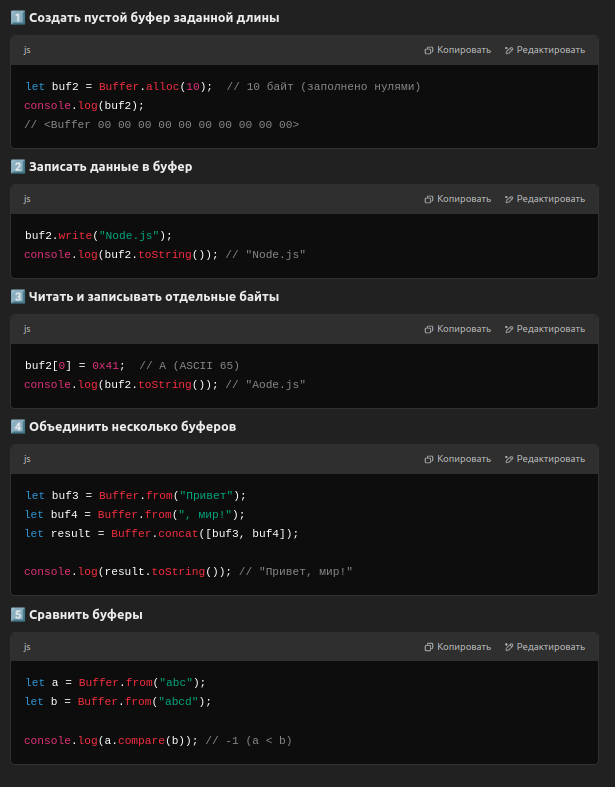
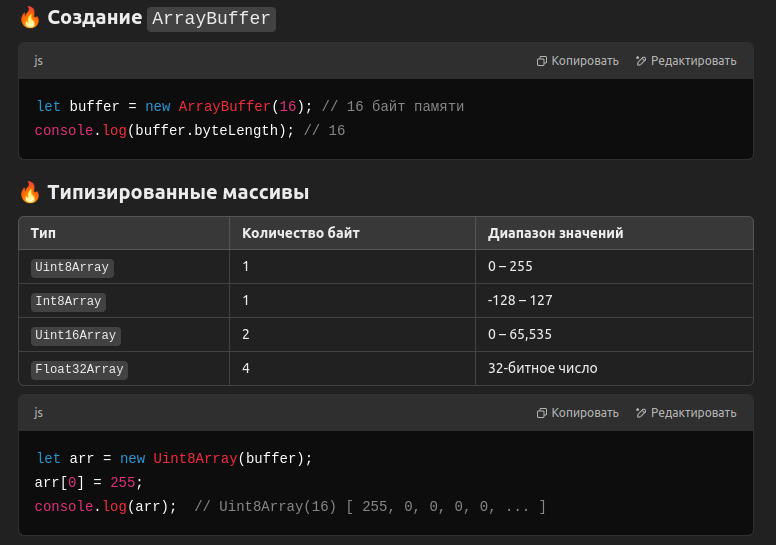
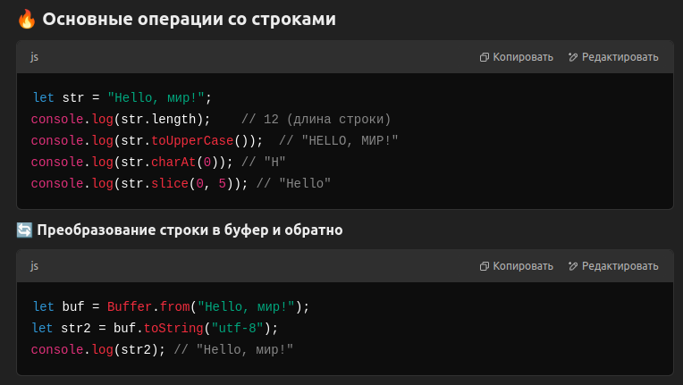
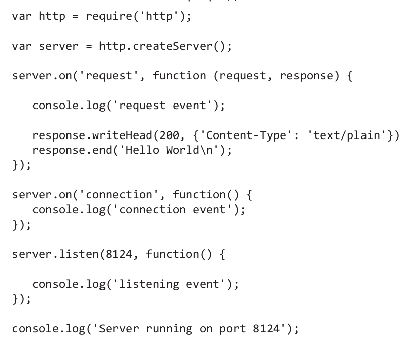
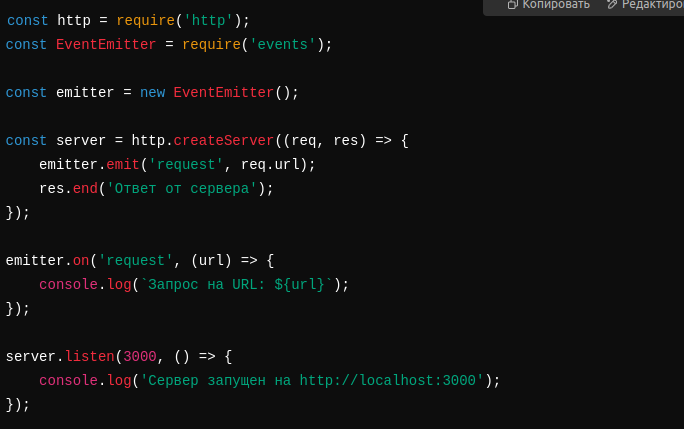

Структурные элементы
Node: глобальные объекты,
события и асинхронная
природа Node
Хотя и браузерные приложения, и приложения Node.js пишутся на JavaScript,
условия их выполнения заметно различаются. Одно из принципиальных
различий между Node и его браузерным «родственником» — буфер для двоичных
данных. Правда, в Node появилась поддержка типизованных массивов
и ArrayBuffer из ES6. Однако большая часть функциональности двоичных
данных в Node реализуется при помощи класса Buffer.
Объект buffer принадлежит к числу глобальных объектов Node. Другой при-
мер глобального объекта — сам объект global, хотя в Node он принципиально
отличается от глобального объекта, к которому мы привыкли по браузеру.
Разработчикам Node также доступен другой глобальный объект, process, — он
связывает приложение Node со средой, в которой оно выполняется.
В браузере переменная, объявленная на верхнем уровне, объявляется глобально.
В Node дело обстоит иначе. Переменная, объявленная в модуле или
приложении Node, не обладает глобальной доступностью; она ограничивается
модулем или приложением.
process – предоставляет информацию о текущем процессе Node.js.
global – это глобальная область видимости, доступная во всех модулях.
process – Информация о процессе Объект process позволяет управлять текущим процессом Node.js,
получать переменные окружения, аргументы командной строки и завершать выполнение программы.
global – Глобальный объект
Объект global содержит глобальные переменные и функции, доступные во всех модулях.
В Node.js для работы с бинарными данными используются буферы (Buffer) и типизированные массивы (TypedArray).
Они позволяют эффективно работать с файлами, потоками и сетевыми запросами.


Типизированные массивы (TypedArray)
Типизированные массивы нужны для работы с байтовыми данными и используются в ArrayBuffer и
DataView. Они позволяют управлять бинарной памятью

В JavaScript строки неизменяемы и хранятся в UTF-16.

Язык JavaScript является однопоточным, то есть синхронным по своей природе.
Это означает, что код JavaScript выполняется строка за строкой до тех
пор, пока приложение не будет завершено. Так как среда Node базируется на
JavaScript, она наследует это однопоточное синхронное поведение.
Но если в приложении используется функциональность, требующая ожидания
некоторого условия (например, открытия файла), получения веб-ответа
или другой аналогичной операции, блокирование приложения до завершения
операции создаст серьезную критическую точку в серверном приложении.
Для предотвращения блокировки используется цикл событий.

Событие request, генерируемое каждый раз при выдаче веб-запроса
клиентом.
Событие connection, генерируемое каждый раз, когда новый клиент
подключается к веб-приложению.
В Node.js объект EventEmitter используется для работы с событиями.
Это базовый механизм, который позволяет подписываться на события и реагировать на них.
on() – подписаться на событие
emit() – запустить событие
once() – срабатывает только один раз
off() – удалить обработчик
removeAllListeners() – удалить все слушатели

В браузере для работы с таймерами существуют setTimeout() и setInterval();
эти функции также доступны и в Node. Они не совсем равноценны, потому
что браузер использует цикл событий, реализуемый на уровне ядра браузера,
а цикл событий Node реализуется библиотекой C++, libuv, но в основном раз-
личия между ними несущественны.